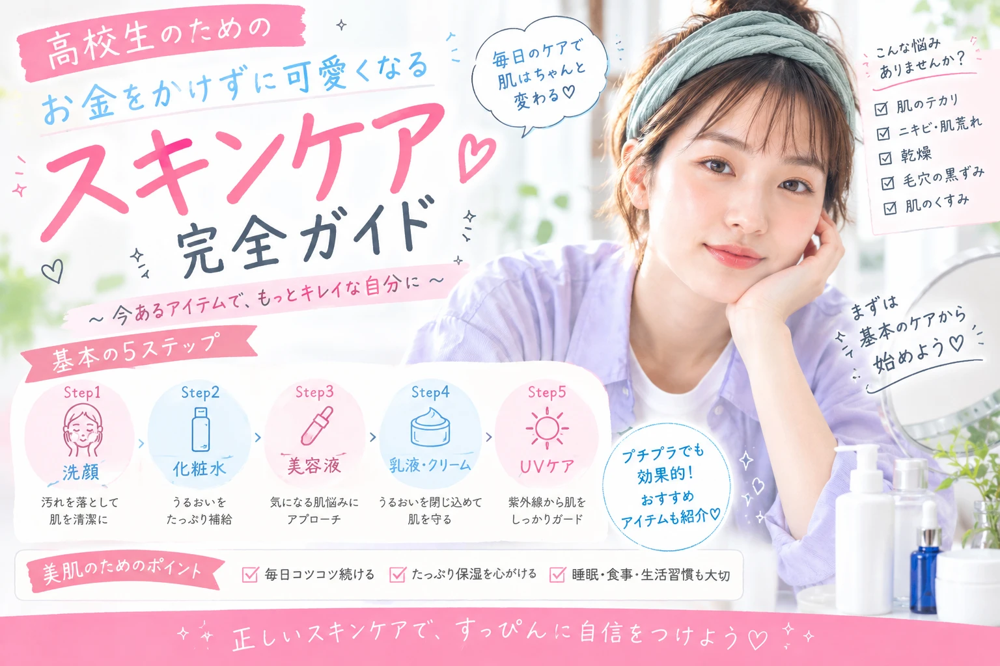

高校生の垢抜け方法｜
お金をかけずに可愛くなる無料・節約テク
「垢抜けたいけど、美容にたくさんお金はかけられない……」 そんな高校生でも大丈夫。 髪・眉・肌・姿勢・服装など、 お金をほとんど使わずに変えられるポイントはたくさんあります。 今日からできる垢抜け習慣を、初心者向けにわかりやすく紹介します。

高校生の垢抜けは「高いコスメ」だけじゃない
垢抜けというと、たくさんのコスメや洋服を買うイメージがありますが、 実はそれだけではありません。
髪を整える、眉毛を整える、肌を清潔に保つ、 姿勢を意識するなど、 普段の習慣を少し変えるだけでも印象は変わります。
特に高校生なら、 「今あるものをきれいに使う」 ことから始めるのがおすすめです。
1．まずは髪を整える
髪型は垢抜け感に大きく影響
高価なヘアケア用品を買う前に、 まずは寝ぐせを直したり、 髪を丁寧に乾かしたりすることを意識しましょう。
前髪や顔周りを整えるだけでも、 顔全体がすっきり見えやすくなります。
2．眉毛を整える
眉毛は「形を整える」だけでもOK
眉毛は顔の印象を左右しやすいパーツです。 いきなり細くしたり大きく形を変えたりせず、 まずは明らかにはみ出している部分を整えるところから始めましょう。
学校のルールがある場合は、 無理に眉メイクをする必要はありません。
3．スキンケアはシンプルに
高いアイテムを何個も使う必要はありません
肌を清潔に保ち、 洗顔後に必要に応じて保湿するなど、 基本のケアを丁寧に続けることが大切です。
新しいアイテムを次々に買うより、 今使っているものを正しい方法で使うことを意識しましょう。
4．姿勢を意識する
0円でできる垢抜け習慣
姿勢は無料で今すぐ変えられるポイントです。
スマートフォンを見るときに背中が丸くなりすぎないようにしたり、 歩くときに背筋を軽く伸ばしたりするだけでも、 全体の印象がすっきりします。
5．服は「買う」より「組み合わせる」
手持ち服を見直してみよう
垢抜けるために毎回新しい服を買う必要はありません。
手持ちの服を一度全部確認して、 色やシルエットを意識して組み合わせてみましょう。
「トップス＋ボトムス＋靴」のように、 シンプルな組み合わせから考えると失敗しにくくなります。
0円でできる高校生の垢抜けチェック
- 寝ぐせをきちんと直す
- 髪を丁寧に乾かす
- 眉毛の形を確認する
- 洗顔・保湿を丁寧にする
- 爪を清潔に整える
- 姿勢を意識する
- 手持ちの服をきれいに着る
- 靴やバッグをきれいにする
- 笑顔を意識する
お金を使うなら「少額から」
最初から全部買いそろえなくてOK
美容アイテムを購入するときは、 「本当に今必要なのか」を考えてから選びましょう。
例えば、 今使っているアイテムがなくなってから次の商品を購入するなど、 買い足すタイミングを決めておくと無駄遣いを防ぎやすくなります。
毎日の小さな習慣が一番大切
垢抜けは、一日で完成するものではありません。
髪を整える、 肌を丁寧にケアする、 服をきれいに着る、 姿勢を意識する。
こうした小さな習慣を続けることで、 少しずつ自分に似合うスタイルが見つかっていきます。
まとめ
高校生の垢抜けは、 高いコスメやブランド服をたくさん買うことだけではありません。
まずは、 髪・眉・肌・姿勢・服装を整える ことから始めてみましょう。
「少ない予算で、最大限かわいく。」 Pro Pocket Beautyでは、 学生でも取り入れやすい美容・ファッション情報を紹介しています。
※学校の校則やルールがある場合は、それを優先してください。 美容方法や商品を試す際は、自分の肌や髪の状態に合わせて無理のない範囲で行いましょう。